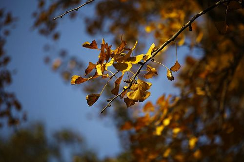
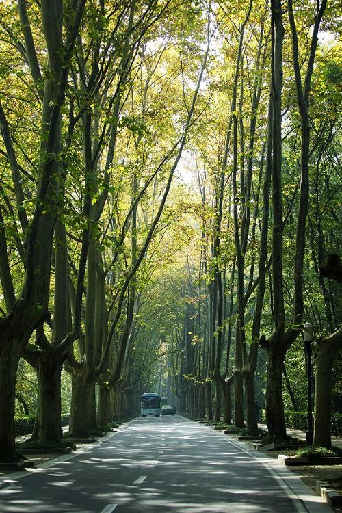
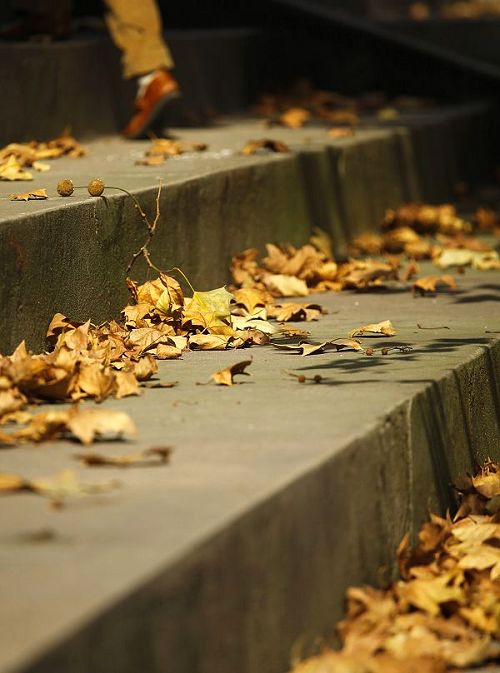

万叶秋声里 @ Nov 14, 2010
Write by Chen wenwen
Photo by Christina
more pix here
好季节里，南京的东郊是把炙手可热的时令蔬菜。所以，我对东郊存有私心。要么在下午曲终人散时，要么在一日繁盛之前，大概只有在此时，东郊的山林树影们是和民国的光阴连续着的。
我和茶小姐是被阳光眷顾的早起的人。一路向阳，啃着大饼油条就入了东郊。走的是体育学院至灵谷寺那条路。梧桐树干笔直而有正气，不存在一丝弯腰的念头。这条路也似向光而长，通向人间的边境。
晨光时针那般移动，在无梁殿的银杏树前落了脚。银杏披裹霞光，羽翼丰满，容颜慈祥，宛若女神仙。地上一片金灿，枝上似乎也不曾缺损，怎么办到的？这株不知多少年的树木，此刻是600年无梁殿的守护者。旧石道，新时光，年复一年的银杏叶。春花有烂漫，盛夏萤火虫，初秋桂花香，深秋是银杏和翻转变幻的山色。冬天也来过，不过那是很久以前，寂静雪白，不是人间。
日光好，注意力就停留在拍照上，想往深处散步的念头也没能延续下去。因为黑压压的人群在10点以后会如海啸侵袭。如果不是周末，步子可以再慢一点，带个保温瓶，用龙竞的乡村花布打包午餐，在厚草地上铺条呢绒毯，在水榭打个盹也不是不可以。
阴雨天的东郊也好，我想念。湿气氤氲，山形隐绰，是低调的灰，我觉得更接近中山陵的肤色，然而那种霾拍不出来，可以画，可以体会。湖水像镜子，青苔和水草在镜面上缓慢地移动，那是悠然仙地。






11 Responses to “万叶秋声里”
2010-11-14
要么在下午曲终人散时，要么在一日繁盛之前，大概只有在此时，东郊的山林树影们是和民国的光阴连续着的。
这句写得真好。
2010-11-14
这一刻的秋温润,喜欢你们这样保留.
2010-11-14
不知怎的，看完文字和图片觉得自己庸俗了许多！
2010-11-14
你的照片越来越好了。。。
2010-11-15
写的真好~~是问问的大作？真想哪天和你们一起~~
2010-11-15
最后一张拍的真好
2010-11-15
拍的也美~~很喜欢~~
2010-11-15
跟文艺青年在一起 照片也越来越文艺。。
2010-11-15
这就是文艺啦？一不小心俺们也文艺了一把？感觉你在讽刺我哇，呵呵，我笑纳啦。不过还是不文艺滴轻松啊~
2010-11-16
没有秋天的广州，少了很多风情。
2010-11-20
风景美，拍的也美
Leave A Reply
存档只读，评论已关闭。